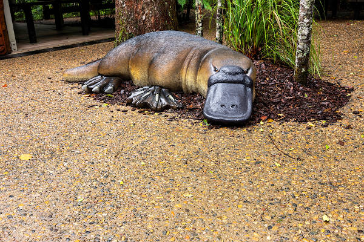
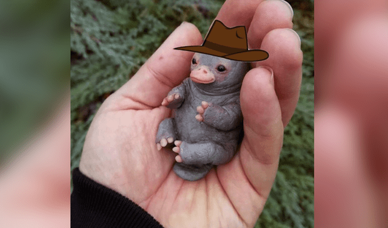

CURIOSIDADES SOBRE ORNITORRINCOS
• Ornitorrincos são animais que podem viver até 20 anos na natureza.
• Eles não possuem estômagos.
• Seus pelos brilham sob a luz negra.
• Pesquisadores australianos descobriram que o leite do ornitorrinco contém uma proteína que ajuda a evitar a
proliferação de superbactérias.
• O veneno dos ornitorrincos possui uma forma duradoura de um hormônio que promove a liberação de insulina, a
descoberta poderá
abrir caminhos para o surgimento de novas terapias para o tratamento de diabetes.
• Atualmente, o ornitorrinco é uma espécie classificada pela IUCN como “quase ameaçada”.
• Em 2013, cientistas descreveram uma espécie de ornitorrinco extinto que media mais de um metro de comprimento.
Esse animal viveu entre cinco e 15 milhões de anos atrás. Ele foi identificado com base em um dente molar fossilizado.
MITOS
Os povos indígenas da Austrália acreditavam que o ornitorrinco era um híbrido entre um pato e um rato d'água. Nas histórias tribais,
o ornitorrinco pediu aos animais terrestres, aquáticos e pássaros que se juntassem ao seu “grupo”. No final, o ornitorrinco
decidiu que ele não se juntaria a nenhum dos seus grupos porque não precisava ser uma parte de um grupo para se sentir especial.

PERIGOS DE EXTINÇÃO
Embora os ornitorrinco não estejam em perigo, eles sofreram declínio populacional nos últimos anos. Os cientistas acreditam que
esse declínio se deve a várias atividades humanas. Eles foram impiedosamente caçados por seus pelos, com textura semelhante ao
pelo de uma lontra, até o século XX.
Mesmo após a proteção adicional ter sido implementada para impedir a caça, o ornitorrinco ainda pereceu nas redes de pesca até
1950. Nos últimos tempos, barragens, poluição e desenvolvimento da terra ameaçavam a sobrevivência do ornitorrinco.

Não machuquem esses mini Perry's Ornitorrinco:)